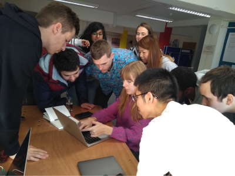

Volunteer with Designer's Den
Be a part of Designer's Den 2024 in Minna. Help us foster innovation and empower individuals in the digital age. Mentor aspiring tech leaders and share your expertise. Make a real difference in our community.
Be a part of Designer's Den 2024 in Minna. Help us foster innovation and empower individuals in the digital age. Mentor aspiring tech leaders and share your expertise. Make a real difference in our community.
At Designer's Den, we empower individuals through technology. Our innovative program connects passionate volunteers with learners from diverse backgrounds to inspire future tech leaders. By fostering a culture of learning, collaboration, and innovation, we aim to drive positive change and build a brighter, tech-driven future for our community.
